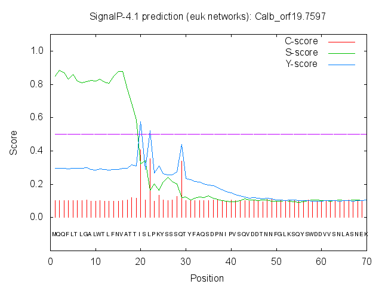
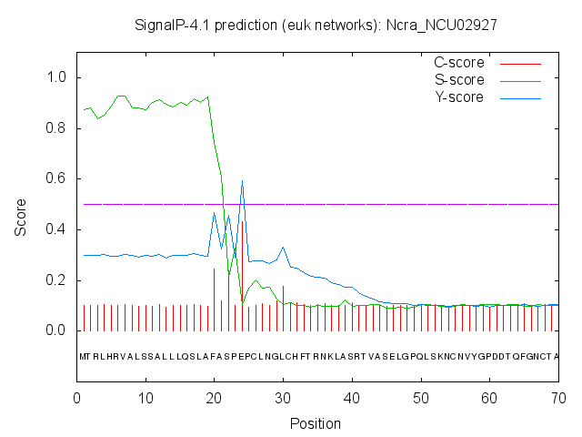

SignalP 4.1 Server - prediction resultsTechnical University of Denmark |
# SignalP-4.1 euk predictions >Scer_YKL128CPlease cite: SignalP 4.0: discriminating signal peptides from transmembrane regions Petersen TN., Brunak S., von Heijne G. & Nielsen H. Nature Methods, 8:785-786, 2011 Explain the output. Go back.# Measure Position Value Cutoff signal peptide? max. C 18 0.123 max. Y 18 0.117 max. S 1 0.141 mean S 1-17 0.103 D 1-17 0.109 0.450 NO Name=Scer_YKL128C SP='NO' D=0.109 D-cutoff=0.450 Networks=SignalP-noTM # data # gnuplot script
>Spar_spar321-g33.1# Measure Position Value Cutoff signal peptide? max. C 24 0.121 max. Y 18 0.121 max. S 1 0.152 mean S 1-17 0.119 D 1-17 0.120 0.450 NO Name=Spar_spar321-g33.1 SP='NO' D=0.120 D-cutoff=0.450 Networks=SignalP-noTM # data # gnuplot script
>Smik_smik702-g22.1# Measure Position Value Cutoff signal peptide? max. C 24 0.118 max. Y 11 0.111 max. S 1 0.138 mean S 1-10 0.100 D 1-10 0.105 0.450 NO Name=Smik_smik702-g22.1 SP='NO' D=0.105 D-cutoff=0.450 Networks=SignalP-noTM # data # gnuplot script
>Sbay_sbayc559-g5.1# Measure Position Value Cutoff signal peptide? max. C 24 0.123 max. Y 11 0.116 max. S 1 0.148 mean S 1-10 0.107 D 1-10 0.111 0.450 NO Name=Sbay_sbayc559-g5.1 SP='NO' D=0.111 D-cutoff=0.450 Networks=SignalP-noTM # data # gnuplot script
>Cgla_CAGL0K07568g# Measure Position Value Cutoff signal peptide? max. C 21 0.212 max. Y 21 0.349 max. S 5 0.747 mean S 1-20 0.562 D 1-20 0.464 0.450 YES Name=Cgla_CAGL0K07568g SP='YES' Cleavage site between pos. 20 and 21: NTA-QD D=0.464 D-cutoff=0.450 Networks=SignalP-noTM # data # gnuplot script
>Cgla_CAGL0K07546g# Measure Position Value Cutoff signal peptide? max. C 21 0.168 max. Y 21 0.301 max. S 4 0.726 mean S 1-20 0.527 D 1-20 0.423 0.450 NO Name=Cgla_CAGL0K07546g SP='NO' D=0.423 D-cutoff=0.450 Networks=SignalP-noTM # data # gnuplot script
>Cgla_CAGL0K07524g# Measure Position Value Cutoff signal peptide? max. C 21 0.138 max. Y 21 0.289 max. S 4 0.757 mean S 1-20 0.594 D 1-20 0.454 0.450 YES Name=Cgla_CAGL0K07524g SP='YES' Cleavage site between pos. 20 and 21: VEM-TV D=0.454 D-cutoff=0.450 Networks=SignalP-noTM # data # gnuplot script
>Nbac_NABA0S25# Measure Position Value Cutoff signal peptide? max. C 42 0.108 max. Y 42 0.105 max. S 27 0.111 mean S 1-41 0.099 D 1-41 0.102 0.450 NO Name=Nbac_NABA0S25 SP='NO' D=0.102 D-cutoff=0.450 Networks=SignalP-noTM # data # gnuplot script
>Nbra_CABR0S29# Measure Position Value Cutoff signal peptide? max. C 28 0.115 max. Y 28 0.110 max. S 14 0.122 mean S 1-27 0.105 D 1-27 0.107 0.450 NO Name=Nbra_CABR0S29 SP='NO' D=0.107 D-cutoff=0.450 Networks=SignalP-noTM # data # gnuplot script
>Ndel_NADE0S12# Measure Position Value Cutoff signal peptide? max. C 28 0.127 max. Y 28 0.130 max. S 7 0.185 mean S 1-27 0.134 D 1-27 0.132 0.450 NO Name=Ndel_NADE0S12 SP='NO' D=0.132 D-cutoff=0.450 Networks=SignalP-noTM # data # gnuplot script
>Nniv_CANI0S04# Measure Position Value Cutoff signal peptide? max. C 28 0.139 max. Y 28 0.129 max. S 7 0.164 mean S 1-27 0.121 D 1-27 0.125 0.450 NO Name=Nniv_CANI0S04 SP='NO' D=0.125 D-cutoff=0.450 Networks=SignalP-noTM # data # gnuplot script
>Scas_Scas721.121# Measure Position Value Cutoff signal peptide? max. C 68 0.110 max. Y 68 0.105 max. S 4 0.110 mean S 1-67 0.097 D 1-67 0.101 0.450 NO Name=Scas_Scas721.121 SP='NO' D=0.101 D-cutoff=0.450 Networks=SignalP-noTM # data # gnuplot script
>Klac_KLLA0B12628g# Measure Position Value Cutoff signal peptide? max. C 24 0.116 max. Y 24 0.104 max. S 2 0.118 mean S 1-23 0.094 D 1-23 0.099 0.450 NO Name=Klac_KLLA0B12628g SP='NO' D=0.099 D-cutoff=0.450 Networks=SignalP-noTM # data # gnuplot script
>Sklu_SAKL0E03718g# Measure Position Value Cutoff signal peptide? max. C 24 0.132 max. Y 24 0.115 max. S 23 0.123 mean S 1-23 0.101 D 1-23 0.108 0.450 NO Name=Sklu_SAKL0E03718g SP='NO' D=0.108 D-cutoff=0.450 Networks=SignalP-noTM # data # gnuplot script
>Agos_AEL304C# Measure Position Value Cutoff signal peptide? max. C 19 0.468 max. Y 19 0.550 max. S 18 0.819 mean S 1-18 0.628 D 1-18 0.592 0.450 YES Name=Agos_AEL304C SP='YES' Cleavage site between pos. 18 and 19: ALA-AQ D=0.592 D-cutoff=0.450 Networks=SignalP-noTM # data # gnuplot script
>Clus_CLUG01309# Measure Position Value Cutoff signal peptide? max. C 17 0.149 max. Y 17 0.127 max. S 14 0.124 mean S 1-16 0.110 D 1-16 0.118 0.450 NO Name=Clus_CLUG01309 SP='NO' D=0.118 D-cutoff=0.450 Networks=SignalP-noTM # data # gnuplot script
>Clus_CLUG03495# Measure Position Value Cutoff signal peptide? max. C 28 0.108 max. Y 66 0.104 max. S 60 0.109 mean S 1-65 0.096 D 1-65 0.100 0.450 NO Name=Clus_CLUG03495 SP='NO' D=0.100 D-cutoff=0.450 Networks=SignalP-noTM # data # gnuplot script
>Dhan_DEHA2C16940g# Measure Position Value Cutoff signal peptide? max. C 17 0.125 max. Y 17 0.114 max. S 16 0.121 mean S 1-16 0.101 D 1-16 0.107 0.450 NO Name=Dhan_DEHA2C16940g SP='NO' D=0.107 D-cutoff=0.450 Networks=SignalP-noTM # data # gnuplot script
>Dhan_DEHA2F04114g# Measure Position Value Cutoff signal peptide? max. C 17 0.158 max. Y 17 0.138 max. S 9 0.150 mean S 1-16 0.117 D 1-16 0.127 0.450 NO Name=Dhan_DEHA2F04114g SP='NO' D=0.127 D-cutoff=0.450 Networks=SignalP-noTM # data # gnuplot script
>Dhan_DEHA2F04906g# Measure Position Value Cutoff signal peptide? max. C 44 0.107 max. Y 44 0.106 max. S 27 0.112 mean S 1-43 0.097 D 1-43 0.101 0.450 NO Name=Dhan_DEHA2F04906g SP='NO' D=0.101 D-cutoff=0.450 Networks=SignalP-noTM # data # gnuplot script
>Dhan_DEHA2G04422g# Measure Position Value Cutoff signal peptide? max. C 18 0.445 max. Y 18 0.607 max. S 6 0.865 mean S 1-17 0.833 D 1-17 0.729 0.450 YES Name=Dhan_DEHA2G04422g SP='YES' Cleavage site between pos. 17 and 18: VIS-IS D=0.729 D-cutoff=0.450 Networks=SignalP-noTM # data # gnuplot script
>Cgui_PGUG03880.1# Measure Position Value Cutoff signal peptide? max. C 24 0.196 max. Y 24 0.182 max. S 1 0.238 mean S 1-23 0.183 D 1-23 0.182 0.500 NO Name=Cgui_PGUG03880.1 SP='NO' D=0.182 D-cutoff=0.500 Networks=SignalP-TM # data # gnuplot script
>Cgui_PGUG01289.1# Measure Position Value Cutoff signal peptide? max. C 17 0.116 max. Y 17 0.111 max. S 9 0.128 mean S 1-16 0.105 D 1-16 0.108 0.450 NO Name=Cgui_PGUG01289.1 SP='NO' D=0.108 D-cutoff=0.450 Networks=SignalP-noTM # data # gnuplot script
>Cgui_PGUG01322.1# Measure Position Value Cutoff signal peptide? max. C 20 0.115 max. Y 11 0.105 max. S 26 0.119 mean S 1-10 0.098 D 1-10 0.101 0.450 NO Name=Cgui_PGUG01322.1 SP='NO' D=0.101 D-cutoff=0.450 Networks=SignalP-noTM # data # gnuplot script
>Cgui_PGUG02971.1# Measure Position Value Cutoff signal peptide? max. C 20 0.711 max. Y 20 0.732 max. S 16 0.875 mean S 1-19 0.749 D 1-19 0.741 0.450 YES Name=Cgui_PGUG02971.1 SP='YES' Cleavage site between pos. 19 and 20: INA-FP D=0.741 D-cutoff=0.450 Networks=SignalP-noTM # data # gnuplot script
>Ctro_CTRG05671.3# Measure Position Value Cutoff signal peptide? max. C 25 0.221 max. Y 25 0.387 max. S 15 0.832 mean S 1-24 0.682 D 1-24 0.546 0.450 YES Name=Ctro_CTRG05671.3 SP='YES' Cleavage site between pos. 24 and 25: IMS-KN D=0.546 D-cutoff=0.450 Networks=SignalP-noTM # data # gnuplot script
>Ctro_CTRG05672.3# Measure Position Value Cutoff signal peptide? max. C 70 0.108 max. Y 70 0.105 max. S 54 0.112 mean S 1-69 0.097 D 1-69 0.101 0.450 NO Name=Ctro_CTRG05672.3 SP='NO' D=0.101 D-cutoff=0.450 Networks=SignalP-noTM # data # gnuplot script
>Ctro_CTRG05673.3# Measure Position Value Cutoff signal peptide? max. C 54 0.118 max. Y 54 0.106 max. S 27 0.108 mean S 1-53 0.097 D 1-53 0.101 0.450 NO Name=Ctro_CTRG05673.3 SP='NO' D=0.101 D-cutoff=0.450 Networks=SignalP-noTM # data # gnuplot script
>Ctro_CTRG05674.3# Measure Position Value Cutoff signal peptide? max. C 70 0.107 max. Y 70 0.104 max. S 50 0.115 mean S 1-69 0.096 D 1-69 0.100 0.450 NO Name=Ctro_CTRG05674.3 SP='NO' D=0.100 D-cutoff=0.450 Networks=SignalP-noTM # data # gnuplot script
>Ctro_CTRG05833.3# Measure Position Value Cutoff signal peptide? max. C 31 0.486 max. Y 26 0.397 max. S 6 0.720 mean S 1-25 0.472 D 1-25 0.427 0.500 NO Name=Ctro_CTRG05833.3 SP='NO' D=0.427 D-cutoff=0.500 Networks=SignalP-TM # data # gnuplot script
>Ctro_CTRG02612.3# Measure Position Value Cutoff signal peptide? max. C 19 0.590 max. Y 19 0.608 max. S 17 0.802 mean S 1-18 0.622 D 1-18 0.616 0.450 YES Name=Ctro_CTRG02612.3 SP='YES' Cleavage site between pos. 18 and 19: ICS-AQ D=0.616 D-cutoff=0.450 Networks=SignalP-noTM # data # gnuplot script
>Calb_orf19.2607# Measure Position Value Cutoff signal peptide? max. C 54 0.109 max. Y 22 0.104 max. S 9 0.118 mean S 1-21 0.100 D 1-21 0.102 0.450 NO Name=Calb_orf19.2607 SP='NO' D=0.102 D-cutoff=0.450 Networks=SignalP-noTM # data # gnuplot script
>Calb_orf19.5103# Measure Position Value Cutoff signal peptide? max. C 18 0.156 max. Y 18 0.115 max. S 23 0.134 mean S 1-17 0.086 D 1-17 0.099 0.450 NO Name=Calb_orf19.5103 SP='NO' D=0.099 D-cutoff=0.450 Networks=SignalP-noTM # data # gnuplot script
>Calb_orf19.6809# Measure Position Value Cutoff signal peptide? max. C 60 0.119 max. Y 60 0.109 max. S 26 0.112 mean S 1-59 0.097 D 1-59 0.103 0.450 NO Name=Calb_orf19.6809 SP='NO' D=0.103 D-cutoff=0.450 Networks=SignalP-noTM # data # gnuplot script
>Calb_orf19.7596# Measure Position Value Cutoff signal peptide? max. C 27 0.595 max. Y 20 0.677 max. S 14 0.932 mean S 1-19 0.875 D 1-19 0.784 0.450 YES Name=Calb_orf19.7596 SP='YES' Cleavage site between pos. 19 and 20: TLA-FP D=0.784 D-cutoff=0.450 Networks=SignalP-noTM # data # gnuplot script
>Calb_orf19.7597 # Measure Position Value Cutoff signal peptide? max. C 20 0.407 max. Y 20 0.577 max. S 2 0.884 mean S 1-19 0.814 D 1-19 0.705 0.450 YES Name=Calb_orf19.7597 SP='YES' Cleavage site between pos. 19 and 20: ATT-IS D=0.705 D-cutoff=0.450 Networks=SignalP-noTM # data # gnuplot script
>Cpar_CPAG04410# Measure Position Value Cutoff signal peptide? max. C 17 0.139 max. Y 17 0.118 max. S 9 0.123 mean S 1-16 0.106 D 1-16 0.112 0.450 NO Name=Cpar_CPAG04410 SP='NO' D=0.112 D-cutoff=0.450 Networks=SignalP-noTM # data # gnuplot script
>Cpar_CPAG02059# Measure Position Value Cutoff signal peptide? max. C 23 0.112 max. Y 11 0.150 max. S 1 0.263 mean S 1-10 0.150 D 1-10 0.150 0.450 NO Name=Cpar_CPAG02059 SP='NO' D=0.150 D-cutoff=0.450 Networks=SignalP-noTM # data # gnuplot script
>Cpar_CPAG02227# Measure Position Value Cutoff signal peptide? max. C 22 0.142 max. Y 22 0.118 max. S 21 0.133 mean S 1-21 0.098 D 1-21 0.107 0.450 NO Name=Cpar_CPAG02227 SP='NO' D=0.107 D-cutoff=0.450 Networks=SignalP-noTM # data # gnuplot script
>Cpar_CPAG01552# Measure Position Value Cutoff signal peptide? max. C 19 0.789 max. Y 19 0.856 max. S 4 0.964 mean S 1-18 0.929 D 1-18 0.895 0.450 YES Name=Cpar_CPAG01552 SP='YES' Cleavage site between pos. 18 and 19: AFA-QV D=0.895 D-cutoff=0.450 Networks=SignalP-noTM # data # gnuplot script
>Cpar_CPAG00993# Measure Position Value Cutoff signal peptide? max. C 19 0.587 max. Y 19 0.728 max. S 13 0.922 mean S 1-18 0.901 D 1-18 0.821 0.450 YES Name=Cpar_CPAG00993 SP='YES' Cleavage site between pos. 18 and 19: VIA-AE D=0.821 D-cutoff=0.450 Networks=SignalP-noTM # data # gnuplot script
>Lelo_LELG00061# Measure Position Value Cutoff signal peptide? max. C 51 0.113 max. Y 31 0.107 max. S 43 0.126 mean S 1-30 0.103 D 1-30 0.105 0.450 NO Name=Lelo_LELG00061 SP='NO' D=0.105 D-cutoff=0.450 Networks=SignalP-noTM # data # gnuplot script
>Lelo_LELG00381# Measure Position Value Cutoff signal peptide? max. C 17 0.108 max. Y 33 0.109 max. S 16 0.130 mean S 1-32 0.105 D 1-32 0.107 0.450 NO Name=Lelo_LELG00381 SP='NO' D=0.107 D-cutoff=0.450 Networks=SignalP-noTM # data # gnuplot script
>Lelo_LELG03016# Measure Position Value Cutoff signal peptide? max. C 30 0.130 max. Y 20 0.177 max. S 9 0.342 mean S 1-19 0.272 D 1-19 0.228 0.450 NO Name=Lelo_LELG03016 SP='NO' D=0.228 D-cutoff=0.450 Networks=SignalP-noTM # data # gnuplot script
>Lelo_LELG05269# Measure Position Value Cutoff signal peptide? max. C 19 0.837 max. Y 19 0.817 max. S 18 0.865 mean S 1-18 0.783 D 1-18 0.799 0.450 YES Name=Lelo_LELG05269 SP='YES' Cleavage site between pos. 18 and 19: VLA-DG D=0.799 D-cutoff=0.450 Networks=SignalP-noTM # data # gnuplot script
>Lelo_LELG01999# Measure Position Value Cutoff signal peptide? max. C 21 0.833 max. Y 21 0.743 max. S 3 0.827 mean S 1-20 0.650 D 1-20 0.693 0.450 YES Name=Lelo_LELG01999 SP='YES' Cleavage site between pos. 20 and 21: VDA-QT D=0.693 D-cutoff=0.450 Networks=SignalP-noTM # data # gnuplot script
>Ylip_YALI0F03707g# Measure Position Value Cutoff signal peptide? max. C 56 0.116 max. Y 56 0.107 max. S 24 0.116 mean S 1-55 0.099 D 1-55 0.102 0.450 NO Name=Ylip_YALI0F03707g SP='NO' D=0.102 D-cutoff=0.450 Networks=SignalP-noTM # data # gnuplot script
>Anid_AN4653# Measure Position Value Cutoff signal peptide? max. C 29 0.132 max. Y 29 0.126 max. S 3 0.155 mean S 1-28 0.123 D 1-28 0.124 0.450 NO Name=Anid_AN4653 SP='NO' D=0.124 D-cutoff=0.450 Networks=SignalP-noTM # data # gnuplot script
>Anid_AN1218# Measure Position Value Cutoff signal peptide? max. C 24 0.263 max. Y 24 0.379 max. S 3 0.773 mean S 1-23 0.550 D 1-23 0.472 0.450 YES Name=Anid_AN1218 SP='YES' Cleavage site between pos. 23 and 24: VAA-KF D=0.472 D-cutoff=0.450 Networks=SignalP-noTM # data # gnuplot script
>Ncra_NCU02927 # Measure Position Value Cutoff signal peptide? max. C 24 0.433 max. Y 24 0.595 max. S 6 0.928 mean S 1-23 0.820 D 1-23 0.717 0.450 YES Name=Ncra_NCU02927 SP='YES' Cleavage site between pos. 23 and 24: ASP-EP D=0.717 D-cutoff=0.450 Networks=SignalP-noTM # data # gnuplot script
Signal peptides: 15 # processed fasta entries # gff file of processed entries